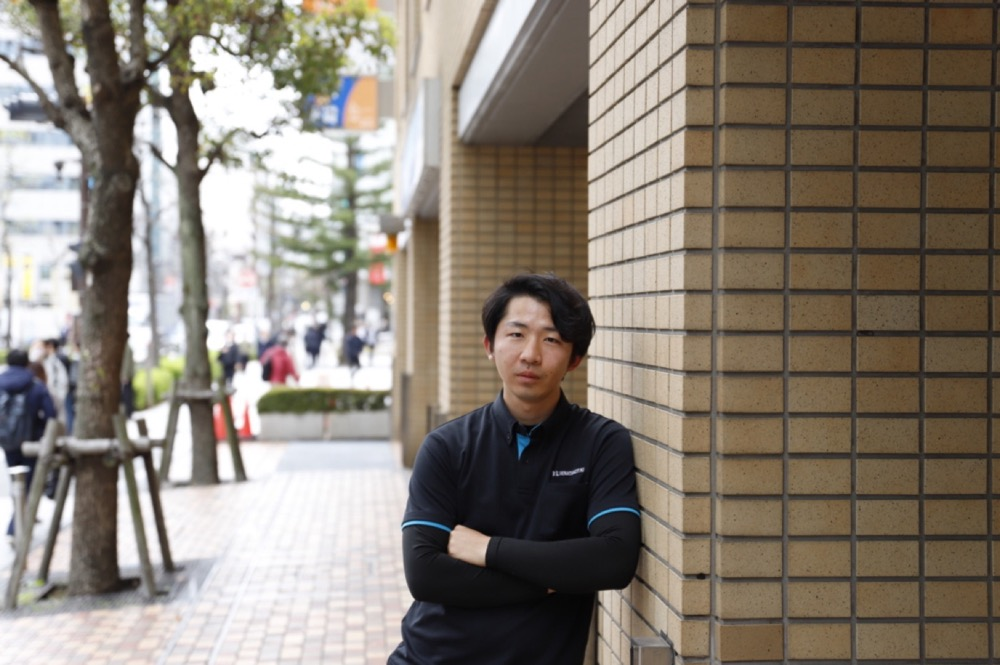
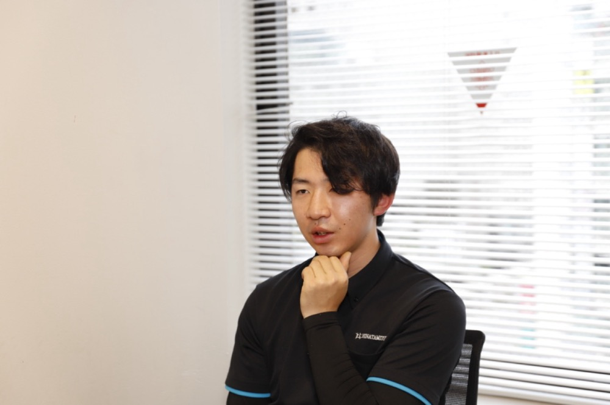
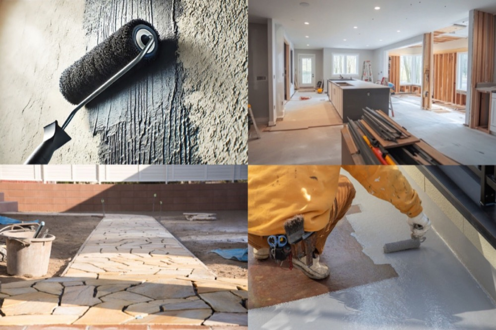
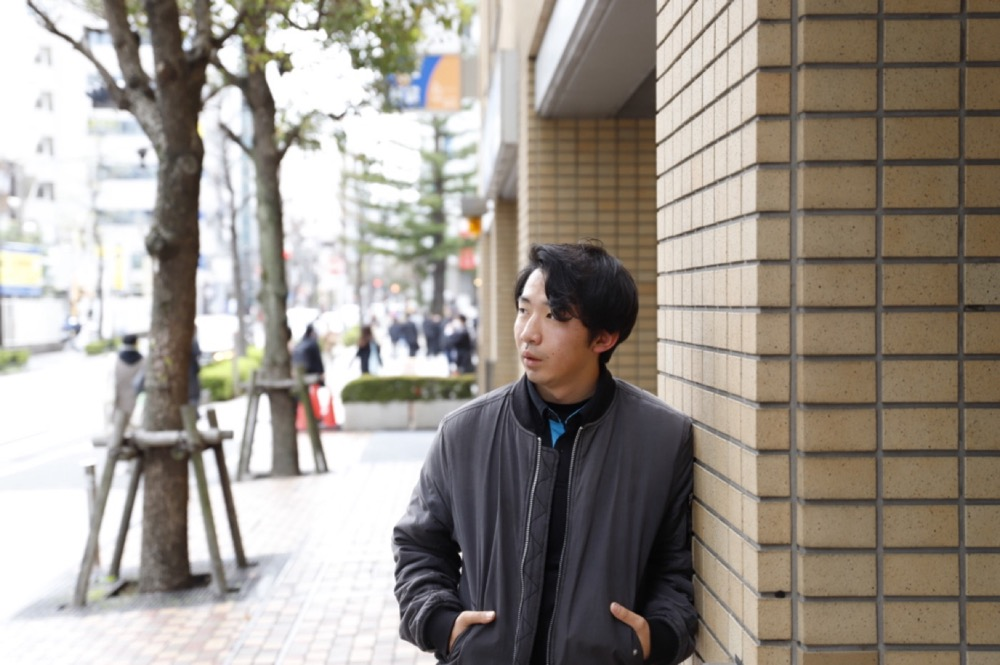

輝く可能性に満ちあふれる会社
谷田 光希Mitsuki Tanida
陽光希株式会社 代表取締役
2019年中央工学校卒業。同年、新卒で建設関係の会社に入社。2022年、一人親方として独立。2023年陽光希ネクストという屋号で個人事業主として開業後、2024年に陽光希株式会社を設立。
企業サイトを見るTRACK 01
輝く可能性に満ちあふれる会社

千葉県全域を拠点に活動する陽光希株式会社は、建設業と広告業を主軸に据えた新進気鋭の企業である。僅か2名の従業員という規模でありながら、その存在感は計り知れず、建築と土木の両面で公共工事を中心として展開に加え、広告業界にも新たな風を送り込んでいる。
2024年3月に設立されたこの会社の舵を取るのは、代表取締役を務める谷田光希だ。彼の経営哲学と行動力は、まさにその社名が示すように、多くの人々に希望と活力を与えている。
TRACK 02
社名の真意

1998年に千葉県で生まれ、千葉県で育った。2019年に中央工学校を卒業後、建設会社に入社しキャリアをスタート。その後、一人親方として現場で経験を積み、2023年には個人事業主として陽光希ネクストを立ち上げる。そして2024年、自らの企業理念とビジョンを具現化するため、陽光希株式会社を設立した。
自身、20歳の頃に交通事故に遭い、大きな怪我を負った。「命の儚さ」そして「自分の使命」を考えさせる契機となった。その後、なんと交通事故によって弟を失った。乗らなくなり谷田が弟に引き渡したバイクに乗っていた最中での事故だった。渡さなければ死ななかったのかもしれない…そんな後悔も相まって、彼は深い葛藤と向き合うことになる。
しかし、「亡くなった者は二度死んではならない」という僧侶の言葉に深く心を動かされた。谷田の心には「どこかに弟の名前を残したい」という強い思いが芽生えた。陽光希という名前には、弟への追悼とともに未来への希望が込められている。


TRACK 03
営業職は設置しない
陽光希株式会社は、建築と土木工事という二つの柱で地域社会に貢献している。公共工事から民間リフォームまで幅広い分野で実績を積み上げており、その柔軟性と対応力は顧客から高く評価されている。
また、営業職を設置しないという独自方針も特徴的だ。無理な押し売りではなく、本当に必要とする顧客へ丁寧なサービスを提供する姿勢は、谷田自身が実家や家族との経験から得た「家」というものへの深い思い入れによるものだ。
さらに広告業では、動画編集やSNSコンテンツ制作など、新しい時代に即したサービスも展開している。学生時代から趣味として動画制作に親しんできた谷田ならではの発想力が、この分野でも活かされている。